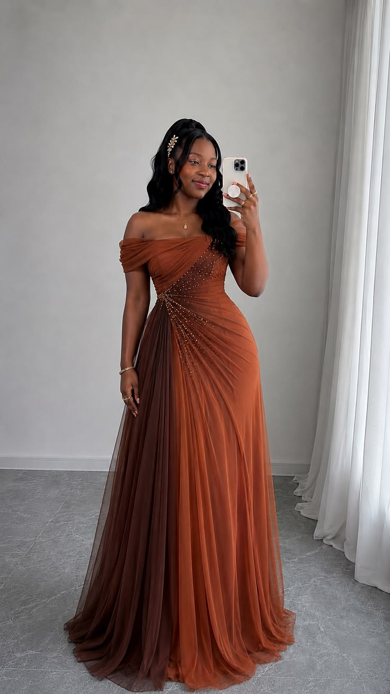

This is an off-shoulder A-line evening gown in a burnt orange/rust ombré tulle, shading into a deeper brown-copper tone toward the hem.
Embellishment: Delicate crystal/rhinestone beading cascading diagonally across the bodice and down toward one hip, like a starburst pattern.
Waist: Ruched, fitted through the waist for a defined silhouette.
Skirt: Full A-line tulle skirt with a dramatic ombré fade from rust/copper at the top to a deeper brown near the floor, with a long train.
Fabric: Layered soft tulle, giving volume and movement.
Occasion fit: Reads as a prom/formal or bridesmaid-style gown.